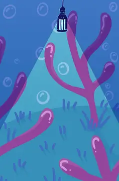
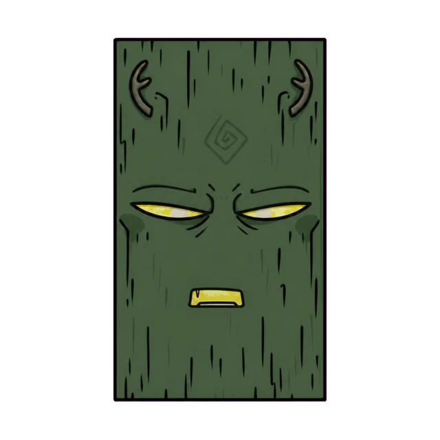

Ball is God?! टावर घुमाएँ। खुद टक्कर बनें।
एक हार्डकोर वर्टिकल डिसेंट आर्केड जहां क्षैतिज ड्रैग टॉवर को गिरते हुए Espa के चारों ओर घुमाता है। सुरक्षित लैंडिंग छोड़ें, कॉम्बो स्मैश चार्ज करें और एक पौराणिक दुनिया से गुज़रें जहां एक बिना सुरक्षा वाली हिट से रन ख़त्म हो जाता है।
सक्रिय प्रोडक्शन: दस जगहों के दृश्य, बॉस, शाखाओं वाले संवाद और कर्म के रास्ते, जो खेल के नियम बदल देते हैं।
घुमाएँटावर को Espa के चारों ओर खींचें
जोखिमतीन सुरक्षित लैंडिंग छोड़ें
स्मैशप्लेटफ़ॉर्म को तोड़ें
मौजूदा बिल्ड के अंदर
संवाद से ज्यादा कर्म बदलता है।
रोशन, तटस्थ और अंधेरे कर्म के रास्ते शील्ड के बर्ताव, चेतावनी संकेतों, दुश्मनों की आक्रामकता और बॉस के चरणों को बदलते हैं, इसलिए कहानी आपके खेलने का तरीका बदल देती है।
बिल्ड की स्थिति सक्रिय प्रोडक्शनसंवाद की सभी दस दुनियाएँ
सभी दस दुनियाओं के संवाद की पृष्ठभूमि, Ena से Deka तक उतरने के क्रम में।





मौजूदा प्रोडक्शन UI
मौजूदा बिल्ड में लेवल चयन, संवाद और नतीजे की स्क्रीन।
यह मौजूदा फ़्लो उसी क्रम में है जिसमें आप इससे मिलते हैं: लेवल चयन, संवाद, एक अहम चुनाव, फिर जीत या अलग हार की स्क्रीन। नीचे की हर तस्वीर प्रोडक्शन Unity प्रोजेक्ट की आर्ट से ली गई है।
आकाशीय मार्ग दस 100-स्तरीय अध्यायों में उत्पन्न स्तरों का चयन करता है।
उत्पादन मेनू 100-स्तरीय अध्यायों में दस स्थानों को मैप करता है और सीधे चयनित रन में खुलता है।

 201
201संवाद उसी जगह के भीतर होता है।
किरदार का पोर्ट्रेट, जगह की आर्ट और बोलने वाले की नेमप्लेट एक ही वर्टिकल फ़्रेम में हैं।


Shash
फिर आगे बढ़ें - लेकिन यह मत सोचिए कि यह आसान होगा। Trials आपका इंतजार कर रहा है जो पहले की हर चीज़ को महज एक छोटी सी चीज़ जैसा बना देगा।
04 / मील के पत्थर पर चुनाव
उत्तर अवतरण का भाग बन जाता है।
स्थानीय स्तर 90 और 100 पर, समर्पित पैनल संवाद द्वारा रन का समाधान करने से पहले अतिरिक्त-या-मार निर्णय के लिए कहता है।

बख्श दो
मार डालो
05 / परिणाम मेनू
जीतने पर आगे बढ़ते हैं। हारने पर उसी चुनौती पर लौटते हैं।
वर्तमान बिल्ड में दो अलग-अलग परिणाम स्थितियां हैं: पैनलविन रीप्ले और अगले स्तर की पेशकश करता है, जबकि PanelOver एक अचूक रीप्ले एक्शन रखता है।
जीत · PanelWin
डिसेंट पूरा हुआ
 दोबारा खेलें
अगला
दोबारा खेलें
अगला
दोबारा खेलें
अगला
संवाद के किरदार
उतरते समय चेहरे मिले।
वैध उत्पादन खुले और बंद पोर्ट्रेट जोड़े वाले सभी 25 अक्षर नीचे शामिल किए गए हैं। अभिव्यक्ति बदलने के लिए कार्ड पर होवर करें या फ़ोकस करें।





गेम अवलोकन
Ball is God?! एक हार्डकोर आर्केड गेम है, जो घूमते टावर के बीच से गिरने के बारे में है।
आइडिया
Espa को एक दिव्य टावर से नीचे उतारें। एक गलती रन खत्म कर सकती है, और आपके बड़े चुनाव दुनिया के खेलने का तरीका बदल देते हैं।
मौजूदा बिल्ड
दस स्थान दृश्य, प्रक्रियात्मक टावर जनरेशन, कॉम्बो स्मैश, स्वाइप शील्ड, बॉस कॉन्फ़िगरेशन, ब्रांचिंग संवाद, उत्पादन मेनू और अभिव्यक्ति-तैयार पोर्ट्रेट लागू किए गए हैं।
दर्शक वर्ग
वे खिलाड़ी जिन्हें कठिन मोबाइल आर्केड गेम, जोखिम और इनाम की टाइमिंग और बॉस पसंद हैं, साथ में फ़ॉलो करने के लिए एक कहानी भी।
स्थिति
सक्रिय प्रोडक्शन। हाल के काम में रनटाइम सिस्टम, दुनियाओं की आर्ट, टेस्टिंग और फ़ोन पर गेम खेलने का अनुभव शामिल हैं।
विशेषताएँ
Ball is God?! में आप क्या करते हैं
ड्रैग-टू-रोटेट डिसेंट
क्षैतिज ड्रैग टावर को स्वचालित रूप से गिरने वाले Espa के चारों ओर घुमाता है, अंतराल, खतरों और सुरक्षित प्लेटफार्मों को रेखांकित करता है।
हार्डकोर आर्केड दबाव
बिना बचाव का एक वार रन खत्म कर देता है, इसलिए आपको टावर को पढ़ना और हर चाल का समय साधना पड़ता है।
बॉस और पौराणिक दुनियाएँ
दस जगहों के दृश्य, जिनमें से हर एक के अपने बॉस हैं, कहानी को एक दुनिया से अगली दुनिया तक ले जाते हैं।
ऐसे चुनाव जो नियम बदल दें
दया, बल और कर्म परिवर्तन संवाद, ढाल नियम, शत्रु आक्रामकता, टेलीग्राफ और बॉस चरण।
गेमप्ले लूप
Ball is God?! कैसे खेलें
- चरण 01डिसेंट पढ़ें
अगले प्लेटफ़ॉर्म, खाली जगहों और खतरों को परखें और गिरते समय सुरक्षित टाइमिंग के मौके ढूँढें।
- चरण 02टावर घुमाएँ
क्षैतिज ड्रैग दुनिया को Espa के चारों ओर घुमाता है, एक सुरक्षित प्लेटफ़ॉर्म या जानबूझकर अंतराल को संरेखित करता है।
- चरण 03जोखिम और स्मैश
कॉम्बो स्मैश को चार्ज करने के लिए तीन प्लेटफार्मों को छोड़ें, फिर संरचनाओं को तोड़ें जबकि ढाल एक घातक गलती को कवर करती है।
- चरण 04परिणाम चुनें
दया और बल कर्म, संवाद और गेमप्ले नियमों को दुश्मनों और मालिकों तक पहुंचाते हैं।
कहानी / दुनिया
एक पौराणिक टावर, जहाँ आपके चुनाव नीचे तक आपके साथ चलते हैं।
Ball is God?! की शुरुआत मोबाइल वर्टिकल-डिसेंट आर्केड के प्रति बचपन के आकर्षण से हुई: अंतराल पढ़ना, तुरंत प्रतिक्रिया करना और सहज ज्ञान से जीवित रहना।
यह फ़ॉर्मैट इससे ज़्यादा भी सँभाल सकता था: बॉस, अपनी शख़्सियत वाले किरदार, कहानी और नैतिक खींचतान। मौजूदा प्रोजेक्ट Espa के साथ दस जगहों के दृश्यों और अजीब किरदारों की टोली से गुज़रता है, ऐसे चुनावों के साथ जो कहानी और खेल दोनों बदल देते हैं।
इसलिए लक्ष्य एक सीधा-सादा वर्टिकल डिसेंट आर्केड बन गया, जिसमें बॉस फ़ाइट का दबाव और कहानी वाले आरपीजी के नतीजे शामिल हैं।
- दृष्टि
- घूमते टावर और पौराणिक कहानी वाला आर्केड
- मौजूदा दुनिया का दायरा
- दस स्थान और बॉस कॉन्फ़िगरेशन
- कहानी का चरण
- पूर्ण दीर्घ-रूप वाली कहानी का मसौदा
- प्रोडक्शन की स्थिति
- सक्रिय प्रोडक्शन
एक नज़र में
सीधे-सादे ड्रैग कंट्रोल, और ऐसी कहानी जो नियम बदल देती है।
ड्रैग करके घुमाने वाले कंट्रोल तुरंत जवाब देते हैं। बाकी सब कुछ पौराणिक दुनियाओं, बॉस और खेल बदल देने वाले चुनावों से आता है।
मौजूदा बिल्ड में पहले से निर्धारक टावर जनरेशन, जोखिम और इनाम वाला स्मैश, एक वार में हार, बॉस, शाखाओं वाला संवाद और गेमप्ले बदलने वाला कर्म एक साथ मौजूद हैं।
- शैली
- कहानी पर टिका वर्टिकल डिसेंट आर्केड
- लक्षित प्लेटफ़ॉर्म
- iOS / Android
- सेशन का रूप
- तेज़ कौशल-आधारित राउंड
- स्टूडियो
- WillowinWorlds
एसेट डाउनलोड करें
Ball is God?! प्रेस और निर्माता एसेट
प्रेस कवरेज, प्रकाशक समीक्षा और स्टोर पेज के संदर्भ के लिए WebP प्रीव्यू। पूरे रेज़ोल्यूशन की सोर्स फ़ाइलें अनुरोध पर उपलब्ध हैं।
ब्रांड और पात्र
गेम आइकन और सभी 25 वर्तमान पात्र जिनमें पूर्ण उत्पादन संवाद चित्र हैं। नाम Unity स्थानीयकरण कुंजियों से मेल खाते हैं।
Espaखिलाड़ी किरदार का चित्र।
Revlaप्रोडक्शन संवाद चित्र।
Shashप्रोडक्शन संवाद चित्र।
Shushप्रोडक्शन संवाद चित्र।
Shishप्रोडक्शन संवाद चित्र।
Gigoप्रोडक्शन संवाद चित्र।
Gogaप्रोडक्शन संवाद चित्र।
Gigaप्रोडक्शन संवाद चित्र।
Askoldप्रोडक्शन संवाद चित्र।
Mirasप्रोडक्शन संवाद चित्र।
Hihप्रोडक्शन संवाद चित्र।
Hehप्रोडक्शन संवाद चित्र।
Hahप्रोडक्शन संवाद चित्र।
Musyaप्रोडक्शन संवाद चित्र।
Dusyaप्रोडक्शन संवाद चित्र।
Susyaप्रोडक्शन संवाद चित्र।
Vladusप्रोडक्शन संवाद चित्र।
Frishaप्रोडक्शन संवाद चित्र।
Lurenप्रोडक्शन संवाद चित्र।
Kurenप्रोडक्शन संवाद चित्र।
Don Yagonप्रोडक्शन संवाद चित्र।
Luryaप्रोडक्शन संवाद चित्र।
Khleyaप्रोडक्शन संवाद चित्र।
Varonप्रोडक्शन संवाद चित्र।
Whiteप्रोडक्शन संवाद चित्र।
मेनू पृष्ठभूमि
आकाशीय स्तर-चयन प्रणाली द्वारा उपयोग की जाने वाली वर्तमान उत्पादन कलाकृति।
 आकाशीय मेनू
आकाशीय मेनू
वर्टिकल डिसेंट की दुनियाएँ
दस वर्तमान स्थान पृष्ठभूमि का पूरा सेट, Ena से Deka तक ऑर्डर किया गया।
 01 · आसमानी दुनियाEna की वर्टिकल डिसेंट पृष्ठभूमि।
01 · आसमानी दुनियाEna की वर्टिकल डिसेंट पृष्ठभूमि।
 02 · अंतरिक्ष की दुनियाDyo की वर्टिकल डिसेंट पृष्ठभूमि।
02 · अंतरिक्ष की दुनियाDyo की वर्टिकल डिसेंट पृष्ठभूमि।
 03 · तूफ़ान की दुनियाTria की वर्टिकल डिसेंट पृष्ठभूमि।
03 · तूफ़ान की दुनियाTria की वर्टिकल डिसेंट पृष्ठभूमि।
 04 · बर्फ की दुनियाTessera की वर्टिकल डिसेंट पृष्ठभूमि।
04 · बर्फ की दुनियाTessera की वर्टिकल डिसेंट पृष्ठभूमि।
 05 · ज्वालामुखी की दुनियाPente की पृष्ठभूमि; गेम में एनिमेटेड।
05 · ज्वालामुखी की दुनियाPente की पृष्ठभूमि; गेम में एनिमेटेड।
 06 · महासागर की दुनियाEksi की वर्टिकल डिसेंट पृष्ठभूमि।
06 · महासागर की दुनियाEksi की वर्टिकल डिसेंट पृष्ठभूमि।
 07 · रेगिस्तानी दुनियाEpta की वर्टिकल डिसेंट पृष्ठभूमि।
07 · रेगिस्तानी दुनियाEpta की वर्टिकल डिसेंट पृष्ठभूमि।
 08 · जंगल की दुनियाOhto की वर्टिकल डिसेंट पृष्ठभूमि।
08 · जंगल की दुनियाOhto की वर्टिकल डिसेंट पृष्ठभूमि।
 09 · गुफा की दुनियाEnnea की वर्टिकल डिसेंट पृष्ठभूमि।
09 · गुफा की दुनियाEnnea की वर्टिकल डिसेंट पृष्ठभूमि।
 10 · नरक की दुनियाDeka की वर्टिकल डिसेंट पृष्ठभूमि।
10 · नरक की दुनियाDeka की वर्टिकल डिसेंट पृष्ठभूमि।
कहानी आर्केड पृष्ठभूमि
संपूर्ण संवाद-स्थान सेट: हॉल ऑफ़ लाइट प्लस सभी दस दुनियाओं के लिए पृष्ठभूमि।
 00 · प्रकाश का हॉलआरंभिक संवाद पृष्ठभूमि।
00 · प्रकाश का हॉलआरंभिक संवाद पृष्ठभूमि।
 01 · आकाश संवादEna कहानी पृष्ठभूमि।
01 · आकाश संवादEna कहानी पृष्ठभूमि।
 02 · अंतरिक्ष संवादDyo कहानी पृष्ठभूमि।
02 · अंतरिक्ष संवादDyo कहानी पृष्ठभूमि।
 03 · तूफ़ान संवादTria कहानी पृष्ठभूमि।
03 · तूफ़ान संवादTria कहानी पृष्ठभूमि।
 04 · हिम संवादTessera कहानी पृष्ठभूमि।
04 · हिम संवादTessera कहानी पृष्ठभूमि।
 05 · ज्वालामुखी संवादPente कहानी पृष्ठभूमि।
06 · सागर संवादEksi कहानी पृष्ठभूमि।
05 · ज्वालामुखी संवादPente कहानी पृष्ठभूमि।
06 · सागर संवादEksi कहानी पृष्ठभूमि।

 07 · रेगिस्तान संवादEpta कहानी पृष्ठभूमि।
07 · रेगिस्तान संवादEpta कहानी पृष्ठभूमि।
 08 · वन संवादOhto कहानी पृष्ठभूमि।
08 · वन संवादOhto कहानी पृष्ठभूमि।
 09 · गुफा संवादEnnea कहानी पृष्ठभूमि।
09 · गुफा संवादEnnea कहानी पृष्ठभूमि।
 10 · नरक संवादDeka कहानी पृष्ठभूमि।
10 · नरक संवादDeka कहानी पृष्ठभूमि।
Ball is God?! के आम सवाल
Ball is God?! के बारे में आम सवाल
Ball is God?! किस प्रकार का गेम है
एक हार्डकोर वर्टिकल डिसेंट आर्केड। आप गिरते हुए Espa के चारों ओर टावर घुमाते हैं, सुरक्षित लैंडिंग छोड़कर स्मैश चार्ज करते हैं और पौराणिक दुनियाओं को चीरते हुए आगे बढ़ते हैं।
Ball is God?! कैसे खेलते हैं?
टावर को घुमाने के लिए क्षैतिज रूप से खींचें, स्मैश चार्ज करने के लिए तीन प्लेटफार्मों को छोड़ें, और जब कूलडाउन शील्ड को घातक हिट को अवशोषित करना हो तो लंबवत स्वाइप करें।
क्या Ball is God?! जारी हो चुका है?
अभी नहीं। यह सक्रिय प्रोडक्शन में है, जिसमें रनटाइम सिस्टम, दुनियाओं की आर्ट, कहानी का कंटेंट और टेस्टिंग शामिल हैं। सार्वजनिक रिलीज़ की कोई तारीख़ नहीं है। लक्षित प्लेटफ़ॉर्म iOS और Android हैं।
Ball is God?! को क्या अलग बनाता है?
इसमें जोखिम और इनाम वाले आर्केड दबाव के साथ दस जगहें हैं, और कर्म संवाद, दुश्मन, चेतावनी संकेत, शील्ड और बॉस को बदल देता है।
Ball is God?! कौन बनाता है
WillowinWorlds, एक स्वतंत्र स्टूडियो, जो मोबाइल पहेली और आर्केड गेम बनाता है।
क्या मैं Ball is God?! के प्रेस एसेट इस्तेमाल कर सकता हूँ?
हाँ, प्रेस, प्रकाशक समीक्षा और स्टोर के संदर्भ के लिए। सोर्स फ़ाइलें निजी रहती हैं, जब तक आप हमसे न माँगें।
Ball is God?! देवलॉग
क्या बदला और कब
- दुनिया की सतहें और खतरों का सत्यापन
किरदारों की प्रस्तुति, निर्धारक जनरेशन और काँटों वाले खतरों पर विज़ुअल और वैलिडेशन का मिला-जुला पास हुआ।
- जुलाई 2026प्रोडक्शन UI और किरदारों की समीक्षा
लेवल चयन, साझा एक्शन कंट्रोल, वर्टिकल संवाद फ़्रेमिंग और किरदारों के जोड़ीदार हाव-भाव अब मौजूद हैं।
- फरवरी 2026प्रोजेक्ट स्कोप समीक्षा
टीम ने एक प्रमुख कहानी एकीकरण पास पूरा किया और परियोजना के पूर्ण पैमाने की समीक्षा की: दस दुनिया, नैतिक विकल्प, बॉस और कई अंत।
- अप्रैल-मई 2025कहानी पुनर्लेखन और क्षमताएं
पूरी कहानी फिर से लिखी गई, चरित्र क्षमताओं में सुधार हुआ और नैतिक परिणाम स्पष्ट हो गए।
- अगस्त 2024कहानी की दिशा की शुरुआत
टीम ने तय किया कि Ball is God?! को एक सीधे-सादे आर्केड सफ़र से बढ़कर होना चाहिए, और एक पौराणिक कहानी और नैतिक चुनावों का विज़न जोड़ा।
- जुलाई 2024मूल अवधारणा
यह प्रोजेक्ट स्टूडियो के पहले गेम आइडिया के रूप में शुरू हुआ: एक दिव्य टावर से गिरने के बारे में तेज़ वर्टिकल आर्केड गेम।
- मौजूदा बिल्डआर्केड और कहानी, एक ही बिल्ड में
घूमते टावर की उतराई, कॉम्बो स्मैश, स्वाइप शील्ड, बॉस, संवाद और कर्म अब एक ही बिल्ड में साथ काम करते हैं।